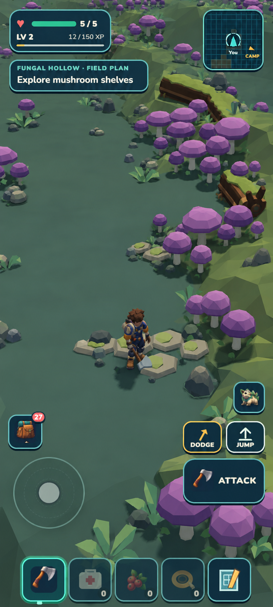
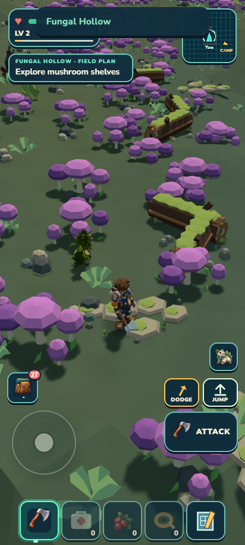

The final terrain preview did not create a readable room edge. No habitat source change is retained. The ordinary existing pocket outing collected three wildflowers with full health and exact reload, but it is a two-minute pocket, not an admitted 3–5 minute circuit.

